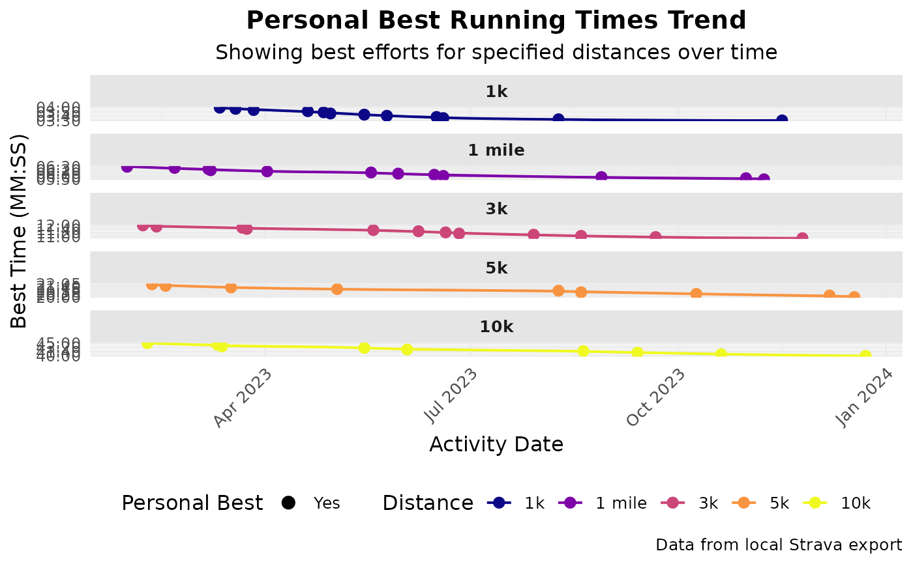

Visualizes the trend of personal best times for specific running distances.
Usage
plot_pbs(
data,
add_trend_line = TRUE,
caption = NULL,
facet_ncol = 2,
title = NULL,
subtitle = NULL,
...
)Arguments
- data
A data frame from
calculate_pbs(). Must containactivity_date,distance,time_seconds.- add_trend_line
Logical. Whether to add a trend line to the plot. Default TRUE.
- caption
Plot caption. Default NULL (no caption).
- facet_ncol
Integer. Number of columns for faceted plots when multiple distances are shown. Default 2 for better aspect ratio. Set to 1 for vertical stacking.
- title
Optional. Custom title for the plot.
- subtitle
Optional. Custom subtitle for the plot.
- ...
Additional arguments. Arguments
activity_type,distance_meters,max_activities,date_range,pbs_dfare deprecated and ignored.
Details
Visualizes data from calculate_pbs. Points show best efforts;
solid points mark new PBs. Y-axis is MM:SS.
Best practice: Use calculate_pbs() first, then pass the result to this function.
Examples
# Example using the built-in sample data
data("sample_pbs", package = "Athlytics")
if (!is.null(sample_pbs) && nrow(sample_pbs) > 0) {
# Plot PBs using the package sample data directly
p <- plot_pbs(sample_pbs)
print(p)
}
#> `geom_smooth()` using formula = 'y ~ x'

if (FALSE) { # \dontrun{
# Example using local Strava export data
activities <- load_local_activities("strava_export_data/activities.csv")
# Calculate PBs first
pb_data_run <- calculate_pbs(
activities_data = activities,
activity_type = "Run",
distances_m = c(1000, 5000, 10000)
)
if (nrow(pb_data_run) > 0) {
plot_pbs(pb_data_run)
}
} # }